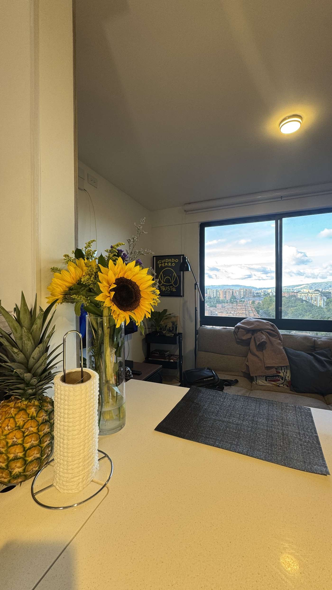
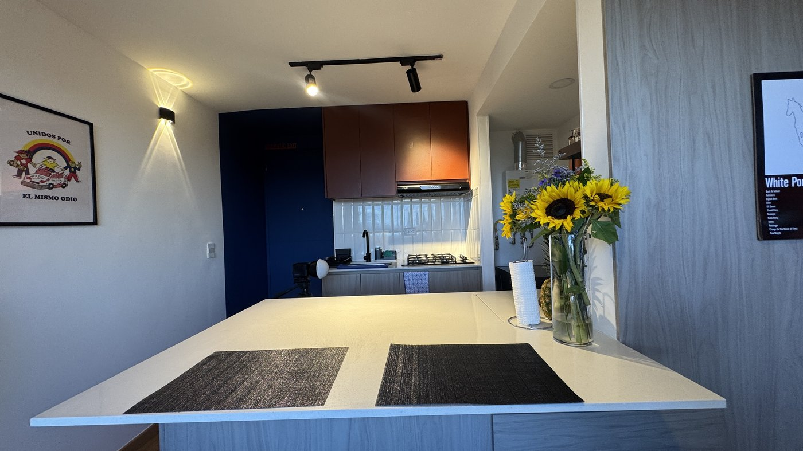
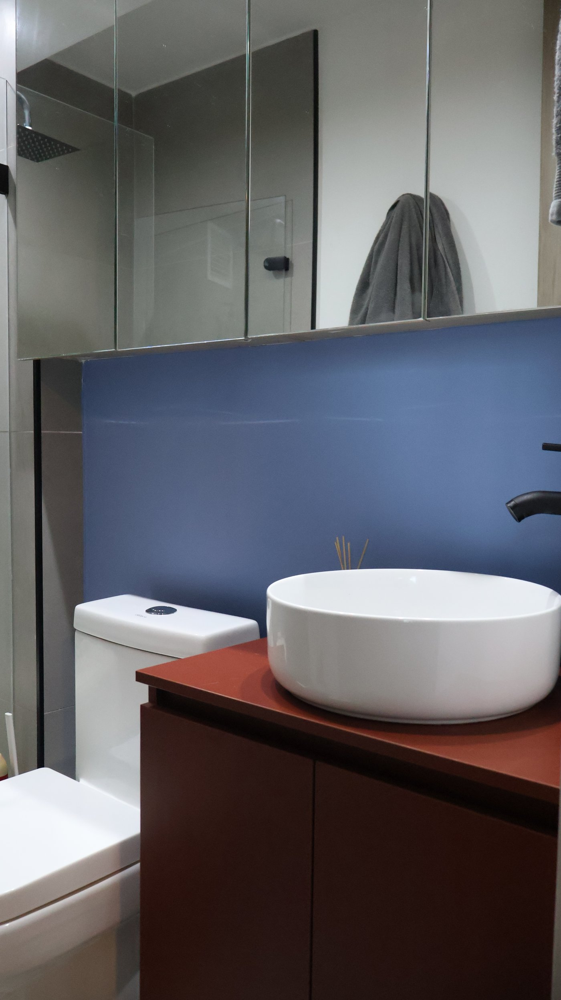
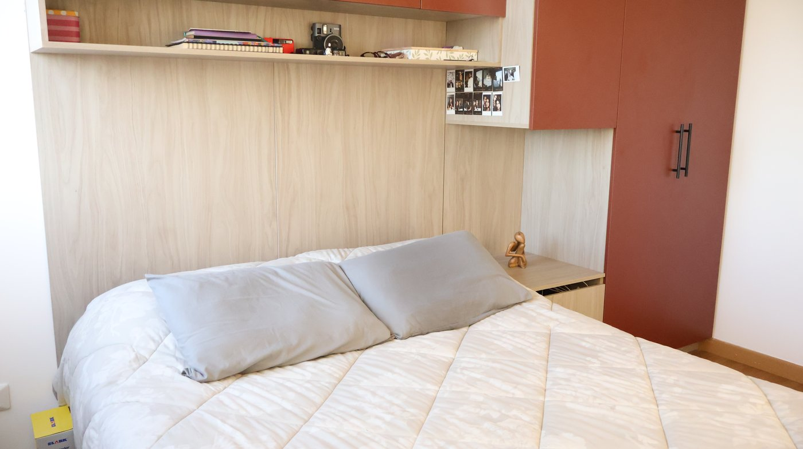
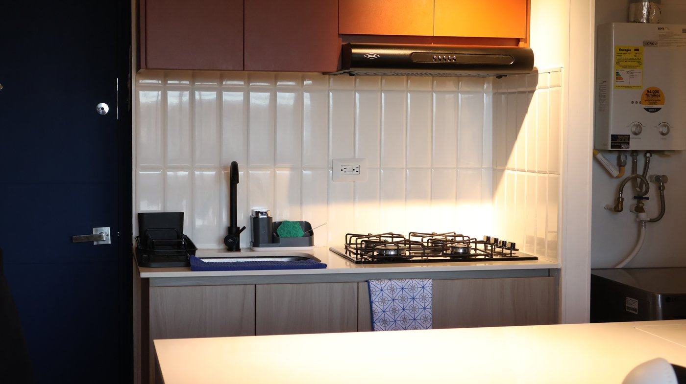
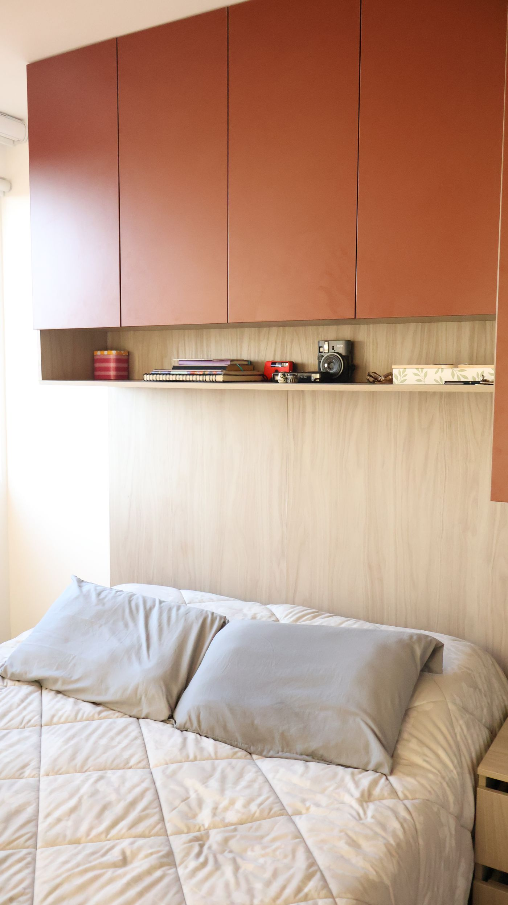

Casas en obra gris
Recibimos tu casa en estructura y la entregamos lista para habitar: pisos, cocina, baños, carpintería, pintura e iluminación con diseño coherente de principio a fin.
Cotizar este servicio →



Acabados en Sala
Cargando DÔKO Studio…Remodelación integral de viviendas
Terminamos casas en obra gris y renovamos casas usadas con diseño elegante, acabados de calidad y un presupuesto claro desde el primer día.
Nuestros servicios
Recibimos tu casa en estructura y la entregamos lista para habitar: pisos, cocina, baños, carpintería, pintura e iluminación con diseño coherente de principio a fin.
Cotizar este servicio →
Renovamos casas con años de uso: redistribución de espacios, actualización de redes, cocinas y baños nuevos, y acabados que le devuelven todo su valor a la propiedad.
Cotizar este servicio →Asesoría en diseño interior y ejecución de acabados puntuales: pisos, enchapes, drywall, closets y muebles a medida, para intervenir solo lo que necesitas.
Cotizar este servicio →¿Por qué DÔKO?
Cotización detallada por capítulos antes de iniciar. Sabes qué pagas y por qué, desde el primer día.
Fechas de entrega definidas por escrito y seguimiento semanal del avance de tu obra.
Coordinamos diseño, materiales y mano de obra. Tú tratas con un solo equipo, no con diez contratistas.
Materiales seleccionados y mano de obra especializada, con garantía de un año sobre lo ejecutado.
Cómo trabajamos
Conocemos tu casa, escuchamos lo que necesitas y evaluamos el estado real del inmueble.
Te presentamos el diseño, los materiales y la cotización detallada con tiempos de ejecución.
Nuestro equipo ejecuta la remodelación con supervisión permanente y reportes de avance.
Recorrido final contigo, lista de detalles resuelta y garantía por escrito de la obra.

Proyectos recientes
Así se distribuye este apartamento — toca un espacio y mira su recorrido en video real.
Toca un espacio para ver su recorrido
Testimonios
“Recibimos la casa en obra gris y DÔKO la entregó lista para vivir, en la fecha acordada y sin costos ocultos.”
“Compramos una casa de 20 años y hoy parece nueva. El acompañamiento en diseño hizo toda la diferencia.”
“Comunicación clara toda la obra: sabíamos qué se hacía cada semana y en qué se invertía cada peso.”
Hablemos de tu proyecto
Cuéntanos qué quieres remodelar y te contactamos para agendar una visita de diagnóstico sin costo.